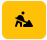

Das Dashboard

Das Dashboard ist die zentrale Ansicht in Cocard und stellt Probleme auf einer Seite zusammengefasst dar. Beim ersten Aufruf werden nur Problemzustände (WARNING, CRITICAL und UKNOWN) angezeigt. Über die Buttons über jedem Abschnitt kann man sich gezielt Einträge mit dem gewählten Zustand anzeigen lassen. Um den Startzustand wieder herzustellen aktualisiert man einfach das Dashboard im Browser.
Nicht in der Übersicht angezeigt werden Konnektoren, die manuelles Update aktiviert haben. Diese werden generell herausgefiltert und sind nur über die Liste der Konnektoren () erreichbar.
Über den Button  am Ende jeder Zeile kann man ein Acknowledge zum Eintrag setzen. Jetzt wird in der Standardansicht der Eintrag herausgefiltert, Einträge mit Acknowledge ruft man explizit über den grau umrandeten Button im Kopf des jeweiligen Abschnittes auf.
Das Dashboard wird automatisch aktualisiert, sobald Cocard über die periodischen Hintergrundjobs neue Informationen bereithält.